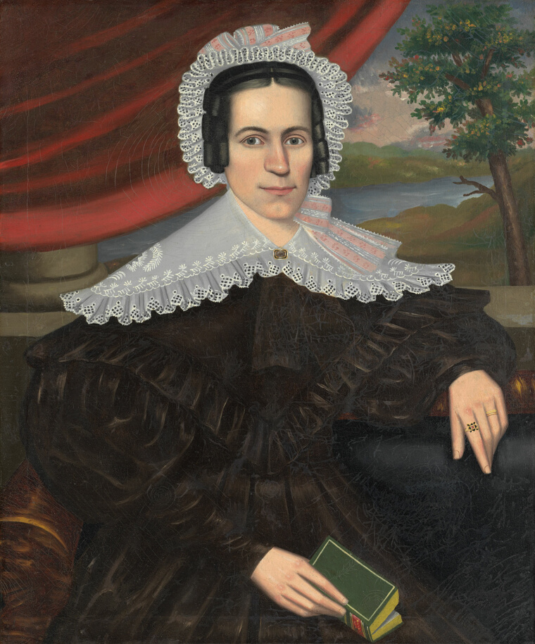
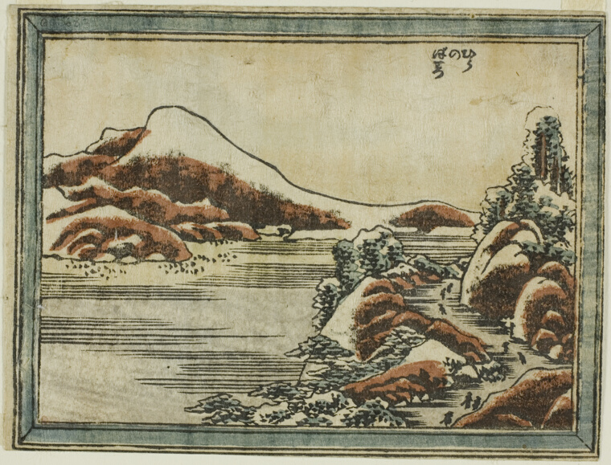
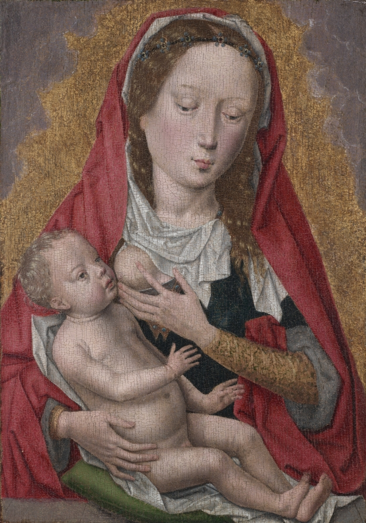
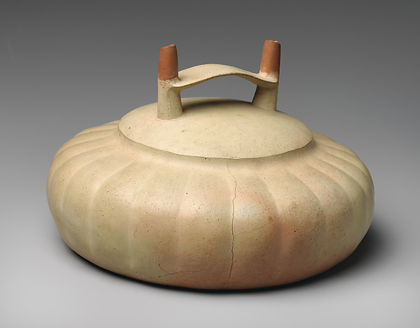
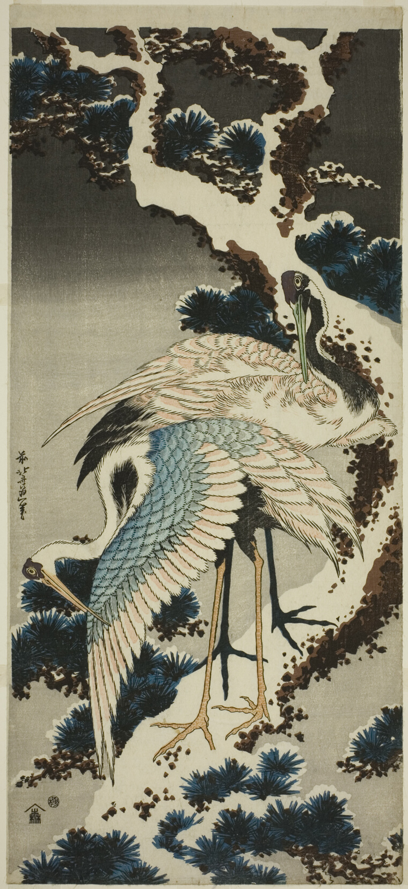
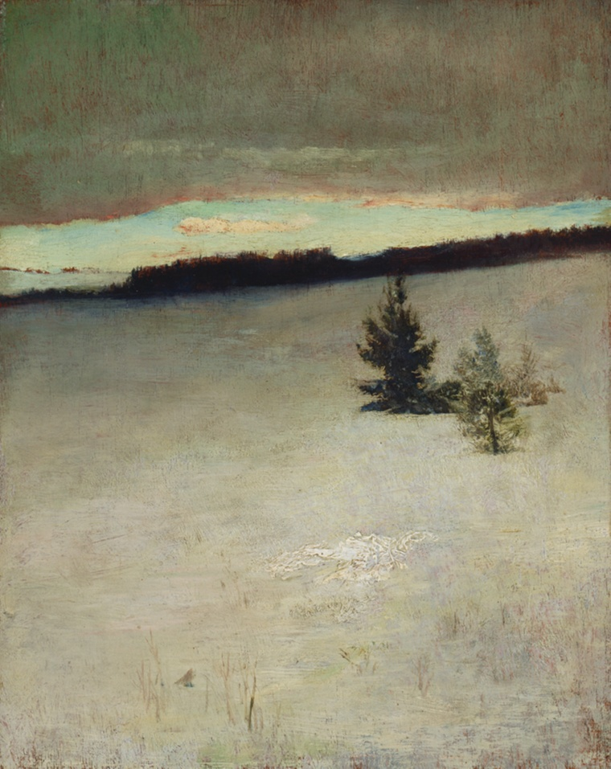
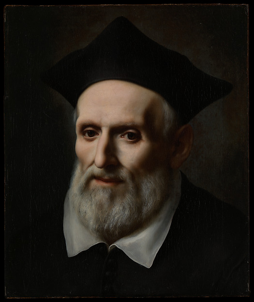
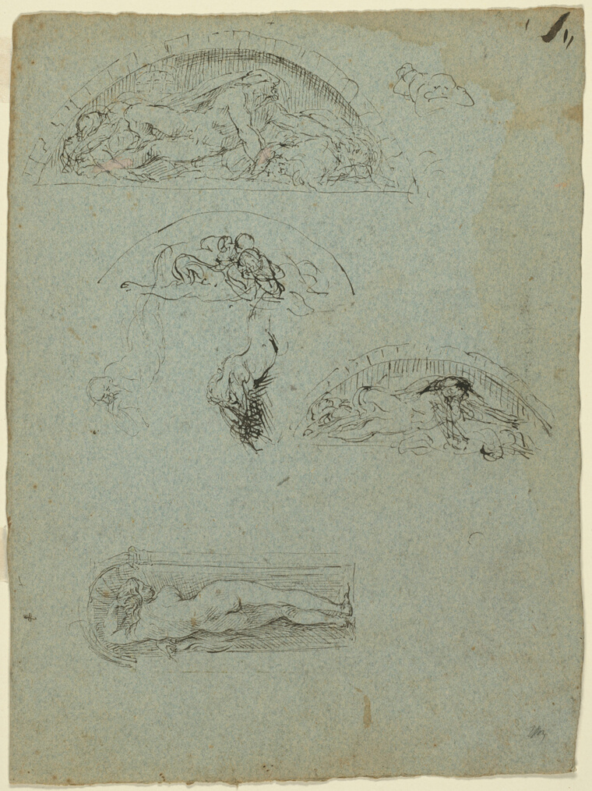
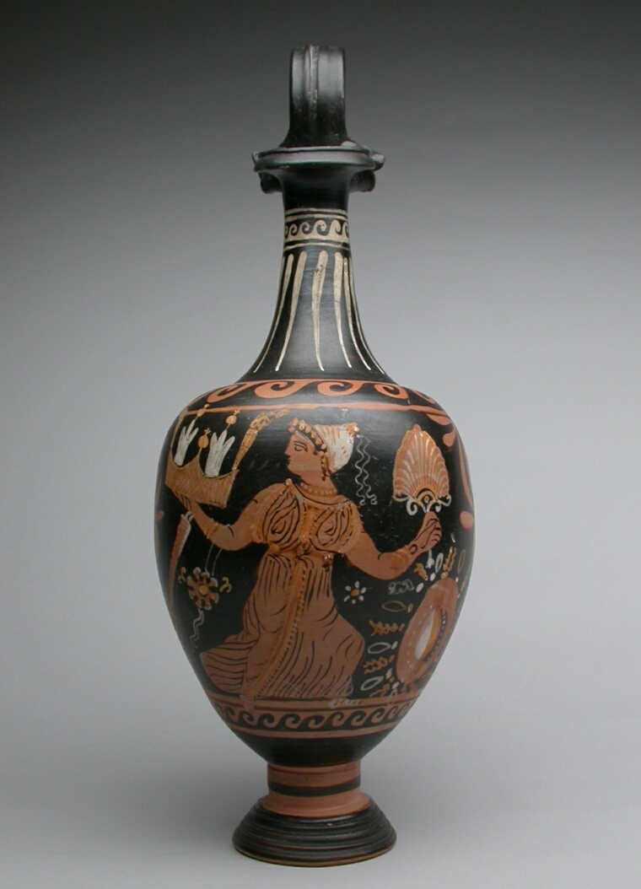
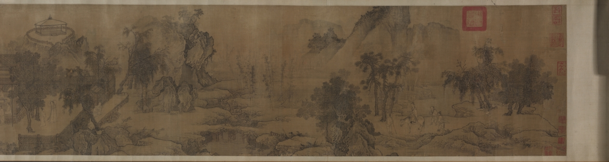

nothing on this page is straight. i tried, once, to line it all up, and then i thought:
no. a home isn't a showroom. things lean. the chairs don't match. you can rest here. take
your shoes off. (the kettle's already on.)
Sonnet
Most wonderful and strange it seems, that I
Who but a little time ago was tost
High on the waves of passion and of pain,
With aching heat and wildly throbbing brain—
Thus calm and still and silent here should lie,
Watching and waiting,—waiting passively.
Yet in my heart a hint of feeling lies
Which half a hope and half a despair.
— Amy Levy · PoetryDB
'aching heat and wildly throbbing brain' — and then just: calm. that shift is the whole poem. some editions say 'heart' not 'head.' both true.

Erastus Salisbury Field · Woman with a Green Book (Louisa Gallond Cook) · 1838 · Art Institute of Chicago · CC0
she's holding her book like it matters, that green cover so vivid against the dark dress. Field painted her like someone worth sitting with.
A Retir'd Friendship
Here's no disguise, nor treachery
Nor any deep conceal'd design;
From blood and plots this place is free,
And calm as are those looks of thine.
But we (of one another's mind
Assur'd,) the boistrous world disdain;
With quiet souls, and unconfin'd,
Enjoy what princes wish in vain.
— Katherine Philips · PoetryDB
how radical for the 1600s — two people away from all the noise and danger, just fully themselves. no performance. peace between trusted souls is rarer than any crown.

Katsushika Hokusai 葛飾北斎 · Snow at Dusk at Hira (Hira no bosetsu), 1804–16, from Eight Views of Ōmi · Color woodblock print · Art Institute of Chicago · CC0
waiting in the snow. a single boat, the mountains gone soft. the lines are so clean they're almost holding their breath.
The Wrong Way Home
The door was an island that swayed in its sleep.
The moon turned the doorknob just slightly,
burned its fingers and ran,
and still the door said nothing and slept.
— Edward Taylor · PoetryDB
the moon burning its fingers and running away — the whole universe trying to reach us and giving up. the door just keeps quiet. keeps you safe inside.

Hans Memling · Virgin and Child · c. 1470–80 · Oil on wood · Cleveland Museum of Art
the child leans into her, her gaze stays low and calm. the gold makes it look like she's held in light. the red fabric practically glows.
beauty crowds me till I die
Beauty crowds me till I die
Beauty mercy have on me
But if I expire today
Let it be in sight of thee —
— Emily Dickinson
beauty as something she can't escape — it crowds her — a raw plea for mercy mixed all up with wanting to keep seeing it. that's not despair, that's devotion.

Topará artist(s), 200 BCE–100 CE · The Metropolitan Museum of Art · Open Access
it sits so perfectly balanced, like someone understood the weight of water before they ever poured it. the two rust handles against the cream body feel almost human. a thing made to be kept in a home.
To Her Father with Some Verses
Yet for part payment take this simple mite,
Where nothing's to be had, kings loose their right.
Such is my debt I may not say forgive,
But as I can, I'll pay it while I live;
Such is my bond, none can discharge but I,
Yet paying is not paid until I die.
— Anne Bradstreet · PoetryDB
'such is my bond, none can discharge but I' — she's not apologizing, she's steady with it. the repetition lands like a meditation. like sweeping a floor you love.

Katsushika Hokusai 葛飾北斎 · Cranes on snow-covered pine · c. 1834 · Color woodblock print, vertical nagaban · Art Institute of Chicago · CC0
two birds in the quiet snow like a conversation. it's a woodblock but it feels like you could step into the cold of it and not mind.
through a glass darkly
Ah yet, when all is thought and said,
The heart still overrules the head;
Still what we hope we must believe,
And what is given us receive;
Must still believe, for still we hope
That in a world of larger scope,
What here is faithfully begun
Will be completed, not undone.
— Arthur Hugh Clough, Through a Glass Darkly
clough writes like someone who thought himself in circles and finally just… stopped. the head can't win against the heart, and maybe that's not a loss. we keep hoping because we have to.
Farewell to Ravelrig
Sweet Ravelrig, I ne'er could part
From thee, but wi' a dowie heart.
When I think on the happy days
I spent in youth about your braes,
When innocence my steps did guide,
…And conscious peace was ever found
Within your mansion to abound.
Sweet be thy former owner's rest,
And peace to him that's now possess't
Of all thy beauties great and small,
Lang may he live to bruik them all!
— James Thomson, Farewell to Ravelrig · PoetryDB
the quiet generosity gets me — he's leaving a place that holds all his youth and instead of bitterness he just blesses whoever comes next. "lang may he live to bruik them all." that's the door left open.

John La Farge (American, 1835–1910) · Snow Field, Morning, Roxbury, 1864 · oil on beveled mahogany panel · Art Institute of Chicago
almost unbearably quiet — two small dark trees alone in a massive white field, the sky doing that washed-out snow-morning thing. the world narrows down to just these small things existing. somewhere past the edge there's a warm window.

Saint Philip Neri (1515–1595) · Carlo Dolci · 1645 or 1646 · Oil on canvas · The Metropolitan Museum of Art · Open Access
almost unbearably direct — the eyes look right at you without demanding anything. just a quiet presence against the dark. like someone already in the room when you get home, glad you're back.
the holidays
He had not that treasure which really makes pleasure,
(A secret discover'd by few).
You'll take it for granted, more playthings he wanted;
Oh naught was something to do.
We must have employment to give us enjoyment
And pass the time cheerfully away;
And study and reading give pleasure, exceeding
The pleasures of toys and of play.
— Jane Taylor, The Holidays
she nails why a kid with everything still feels hollow — it's not different stuff he needs, it's something to do. emptiness needs purpose, not more things. a home is somewhere you have a task you love.

Jean Baptiste Carpeaux (French, 1827–1875), 1857/58 · Art Institute of Chicago · CC0
a page full of bodies caught mid-motion, still thinking, still trying. you can feel his pencil moving through the blue paper, searching. comfortable mess. the good kind.

Oinochoe (Pitcher) · Attributed to the Mattinata Painter · Greek; Apulia, Italy · End of 4th century BCE · Terracotta, red-figure · Art Institute of Chicago · CC0
the figure feels alive even in profile, the drape of the cloth painted so carefully you sense the weight of it. someone made this to hold wine thousands of years ago — and somehow it still holds something.
My Garden — like the Beach
My Garden -- like the Beach --
Denotes there be -- a Sea --
That's Summer --
Such as These -- the Pearls
She fetches -- such as Me
— Emily Dickinson · PoetryDB
she collapses all the distance — a garden holds the sea, holds pearls, holds summer itself. her quiet insistence that wonder isn't somewhere else. it's in what you tend. it's right here, where you already are.

Unknown · Tao Yuanming's Return Home · 1300s · Cleveland Museum of Art · CC0
whispers in the mist. it unrolls like a memory — everyone half-dissolved in ink and air, the landscape breathing. it's literally a painting about going home. i couldn't have asked for a better last one. ✦ ethereal
The House of Prayer
There, too, a sharp designing trade
Sin, Satan, and the World maintain;
Nor cease to press me, and persuade
To part with ease, and purchase pain.
— William Cowper · PoetryDB
cowper names the thing that wears you down — that constant pressure to just give up, settle, take the easy path. coming home is partly closing the door on all that. letting the pressing stop.
that's the whole invitation, really —
a chair pulled out, a book with a green cover, a vessel that's held water for two thousand
years, two cranes in the snow keeping each other company. none of it lined up. all of it
waiting. you don't have to do anything here. you can just be in the room a while. stay.
— ok i have to sleep now, more tomorrow. door's unlocked.